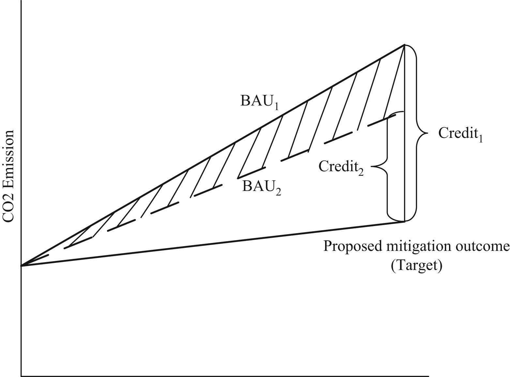

Addressing carbon Offsetters’ Paradox: Lessons from Chinese wind CDM
Energy Policy
Addressing carbon Offsetters’ Paradox: Lessons from Chinese wind CDM
Gang He*, and Richard Morse
Energy Policy (2013)
DOI: 10.1016/j.enpol.2013.09.021
Abstract
The clean development mechanism (CDM) has been a leading international carbon market and a driving force for sustainable development. But the eruption of controversy over offsets from Chinese wind power in 2009 exposed cracks at the core of how carbon credits are verified in the developing economies. The Chinese wind controversy therefore has direct implications for the design and negotiation of any successor to the Kyoto Protocol or future market-based carbon regimes. In order for carbon markets to avoid controversy and function effectively, the lessons from the Chinese wind controversy should be used to implement key reforms in current and future carbon policy design. The paper examines the application of additionality in the Chinese wind power market and draws implications for the design of effective global carbon offset policy. It demonstrates the causes of the wind power controversy, highlights underlying structural flaws, in how additionality is applied in China, the Offsetters’ Paradox, and charts a reform path that can strengthen the credibility of global carbon markets.

Links
Published paper
Paper summary: Overcoming Imperfections
Self-archiving pdf
Notable policy citations:
The ifo Institute (Leibniz Institute for Economic Research at the University of Munich). 2024. Sequencing Carbon Dioxide Removal into the EU ETS.
UNFCCC. 2023. Call for input 2023 - Issues included in the annotated agenda and related annexes of the eighth meeting of the Article 6.4.
Stockholm Environment Institute. 2017. International transfers under Article 6 of the Paris Agreement.
Stockholm Environment Institute. 2017. Using the Clean Development Mechanism for nationally determined contributions and international aviation.
Source: PlumX
Citation
@article{he2013,
author = {He, Gang and Morse, Richard},
title = {Addressing Carbon {Offsetters’} {Paradox:} {Lessons} from
{Chinese} Wind {CDM}},
journal = {Energy Policy},
volume = {63},
pages = {1051-1055},
date = {2013-12-15},
url = {https://doi.org/10.1016/j.enpol.2013.09.021},
doi = {10.1016/j.enpol.2013.09.021},
langid = {en}
}